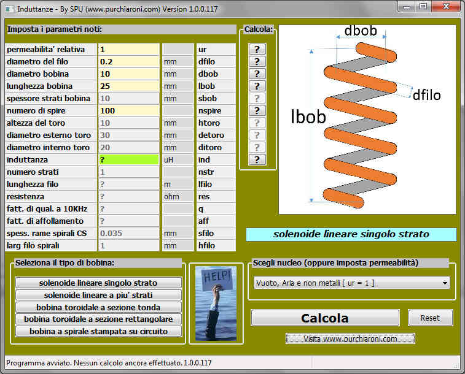

Inductances calculator
Temporary available only in Italian, the tool provides an user-friendly way to define all the properties of a coil.
As shown below, the interface is a single page. The bottom left buttons group allows to choose between several tye of coil.
An
online help is supplied too in pdf format. Clicking on a "?" button,
you can decide which parameter calculate (all the other ones must be
defined).
CLICK HERE TO DOWNLOAD THE EXE AND THE PDF. It is a portable application. Just put the two files togheter in a same folder.
